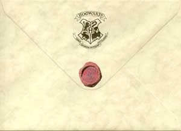
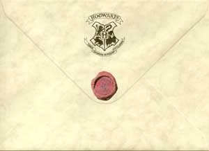

Admission to Hogwarts is selective, in that children who show magical ability will automatically gain a place,and squibs cannot attend the school as students (though they can work there in other roles, as Argus Filch does).A magical quill at Hogwarts detects the birth of magical children and writes their names into a large parchment book, but there is no admission test because "you are either magical or you are not." Every year, a teacher checks this book and sends a letter to the children who are turning eleven. Acceptance or declination of a place at Hogwarts must be posted by 31 July. The letter also contains a list of supplies like spell books, uniform, and other things that the student will need. The prospective student is expected to buy all the necessary materials, normally from shops in Diagon Alley, a concealed street near Charing Cross Road in London found behind a pub by the name of The Leaky Cauldron. Students who cannot afford their supplies can receive financial aid from the school, as happened with the young orphan Tom Riddle.